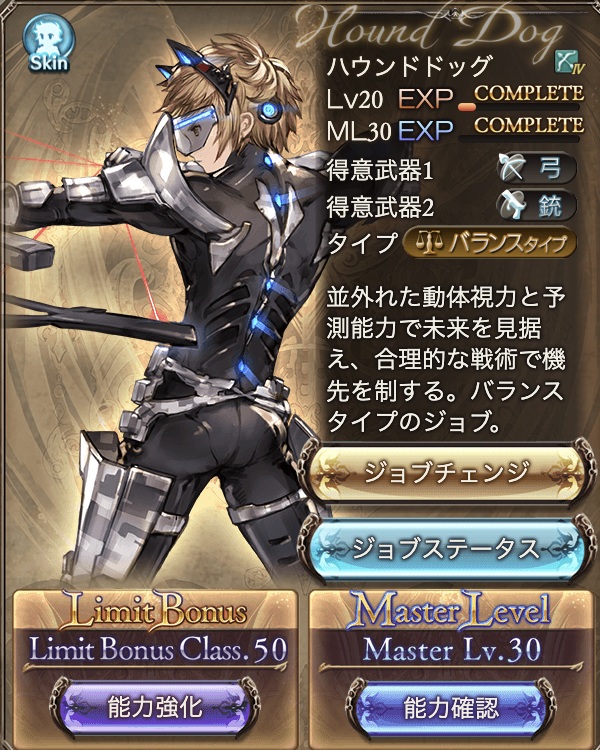
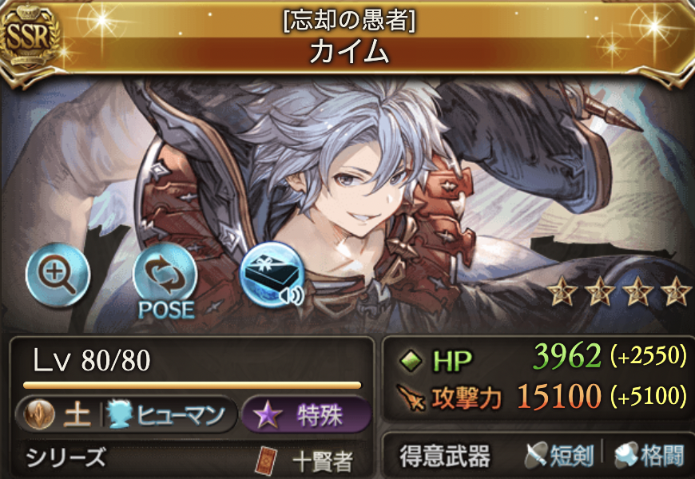
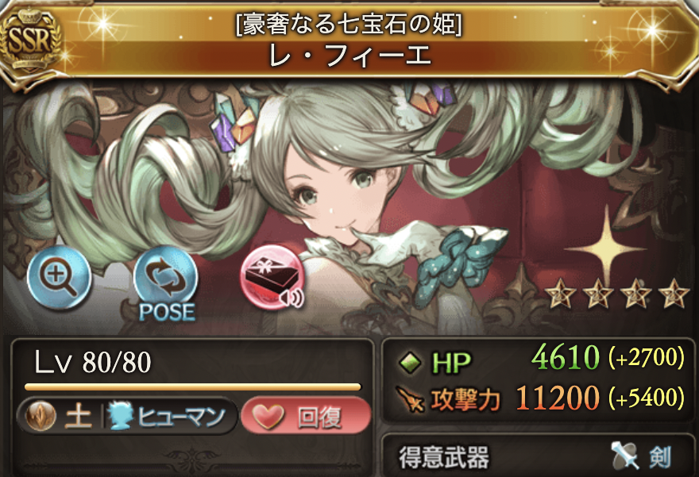
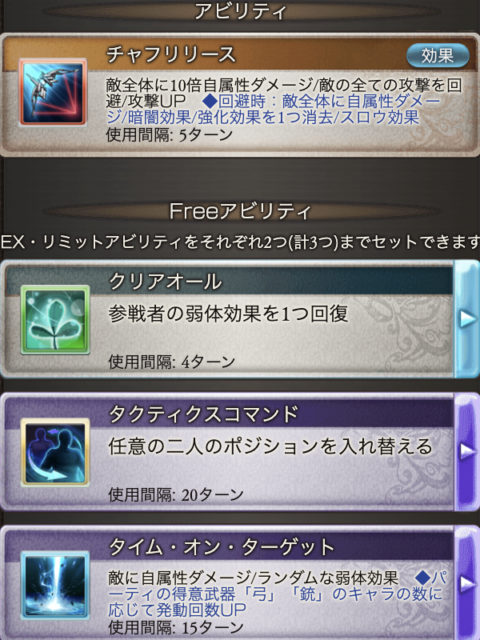
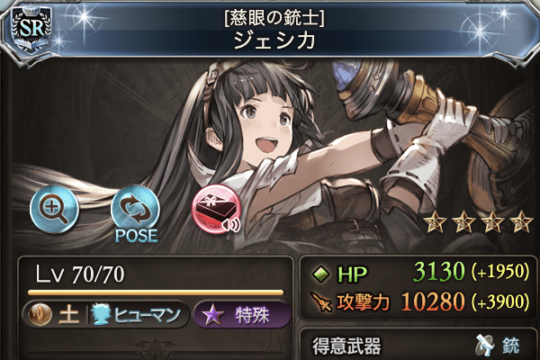
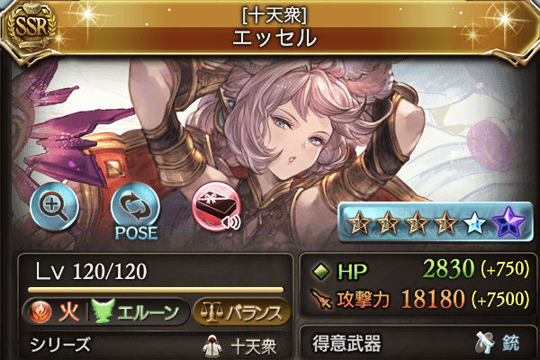
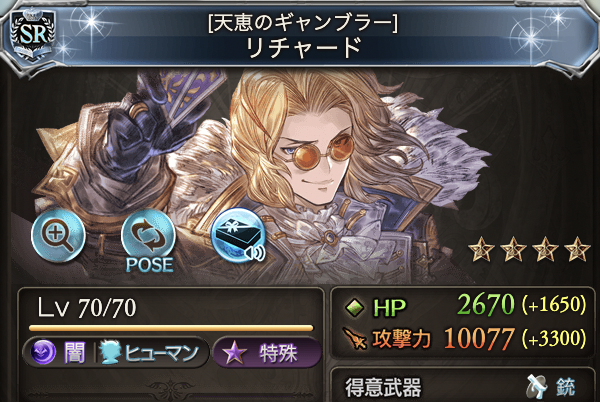
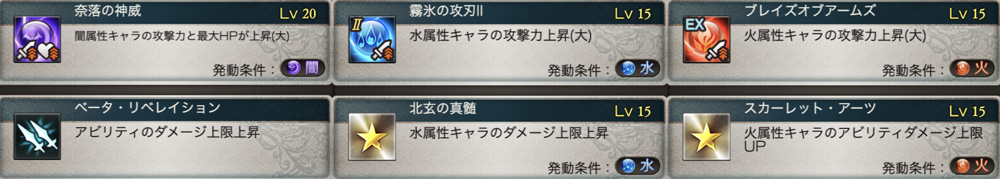
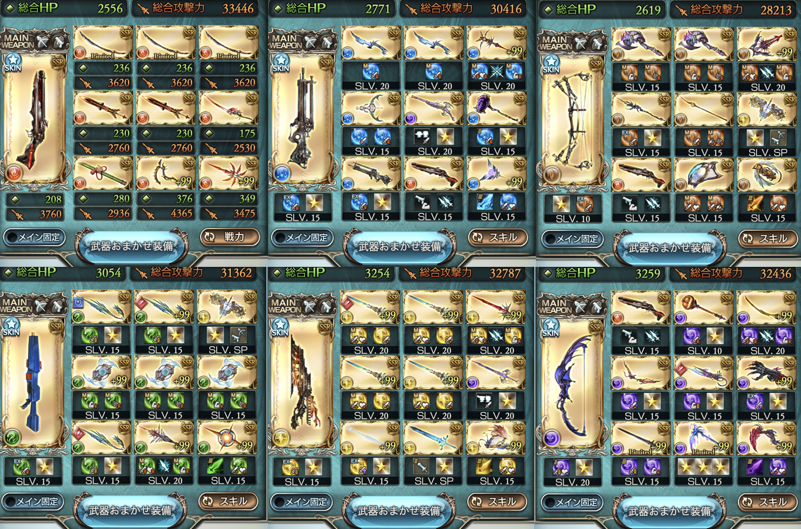

TOT編成
はじめに
この記事ではTOT編成のキャラや武器について書いていきます
情報はできるだけその都度更新していきたいと思います
TOT編成は、私も日課や周回でよくお世話になっています
この記事でわかること
- TOT編成の概要やおすすめの編成キャラ
- TOTのダメージを伸ばすコツ
目次
そもそもTOT編成とは
読み飛ばしたい方は👉（TOT編成のメリット・デメリット）
タイム・オン・ターゲット（ハウンドドッグのリミットアビリティ）でダメージを与える編成です
このアビリティは得意武器が「弓」か「銃」のキャラの数に応じてダメージ回数が増加するので、基本的にパーティに編成するのは全員弓か銃得意のキャラです
装備にはよりますが、ダメージ的には500万〜1000万程度のダメージが出ます
使い所としては、月末のイベントなどの比較的HPが低い敵の討伐に向いています
他にはサイドストーリーや共闘のミッション、砂箱の5ゲージの敵などにも使えると思います
砂箱に関しては、TOTを打つ前に召喚石のベルゼバブと組み合わせて討伐しています（詳細はこちら）
この討伐方法が最速、最適かどうかは分かりませんが、選択肢の一つとしてはありなんじゃないかなと思っています
TOT編成のメリット・デメリット
読み飛ばしたい方は👉（TOT編成のキャラ）
メリット
- 硬直時間が短い
- フルオートの初手でTOTが発動できる
- キャラの属性を問わず編成できる
硬直時間が短い
TOTはアビリティなので、奥義や通常攻撃よりも硬直時間が短いです
硬直時間が長いと周回の効率が下がります
プレイ時間は有限ですし、できる限り効率良く周回したいですよね
フルオートの初手でTOTが発動できる
戦闘開始前にフルオートをONにすることで、わざわざアビリティを押さなくても攻撃が開始されます
TOTで倒せる敵なら、TOTのモーション時にリロードするとすぐにリザルト画面に遷移できます
戦闘開始前にONにするだけでいいので、気楽に周回できるというところも良いですね
（※フルオートの初手でTOTを発動させるには、アビリティについて考える必要があります）
キャラの属性を問わず編成できる
グラブルのパーティは基本的に属性を統一して編成しますが、TOT編成ではその必要はありません
TOT編成では銃と弓のキャラであれば攻撃回数は同じなので、キャラの属性は気にしなくても大丈夫です
キャラが少なくても編成できるのはありがたいですよね
デメリット
- 銃、弓キャラに固定される
銃、弓キャラに固定されるのはデメリットでもあります
サブメンバーでも発動するサポアビを持つキャラを編成したくても、そのキャラが銃か弓が得意なキャラでなければ、ダメージが低下してしまいます
例えば、私が周回でよく編成しているカイムや土レフィーエもTOT編成には向いていません
 TOT編成は、パーティが固定されがちなので見飽きたり、経験値が特定のキャラに偏ったりするというのもデメリットかもしれません
経験値はTOT編成に限らずですが、個人的にはできればいろんなキャラを使いたいと思っているので、少し残念ではありますね
TOT編成のキャラ
読み飛ばしたい方は👉（TOT編成でダメージを出すには）
TOTに編成する前提は、得意武器が銃か弓のキャラです
その上で、フルオートをONにした際に初手でTOTを発動させることを考えます
フルオートのアビリティの順番は、強化（黄）→弱体（青）→攻撃（赤）です
TOTのアビリティは弱体アビリティなので、強化アビリティを持たないキャラを編成することで初手でTOTを打つことができます
回復アビリティ（緑）やフィールドアビリティ（紫）、キャラを選択するアビリティはフルオートでは発動しません
全属性共通のおすすめキャラ
SRジェシカ
少しダメージが足りない時の一押しになると思います
リミットボーナスアビリティで男性キャラの攻撃UPがあるので、主人公が男性であれば全属性で使えます
サポアビの方は土属性の男性キャラ限定です
エッセル
サポアビにアイテムドロップ率UP（5% or 10%）があるのでドロップを重視するなら採用ですね
エッセルは2アビが強化アビリティなのでサブに編成するのがおすすめ
SRリチャード
サポアビにアイテムドロップ率UP（1%）があるのでドロップを重視するなら採用の余地ありです
SRリチャードは3アビを取得してしまったら、フルオートの初手でTOTが発動できないので、エッセル同様サブメンバーに編成ですね
私も3アビ取得しているのでサブに固定しています
属性限定のおすすめキャラ
こちらもいたら編成に入れると火力UPが見込めます
クピタン（水） アビリティ与ダメ上昇（3アビ未取得）
メーテラ（土） アビリティ与ダメ上昇
SRジェシカ（土） 既出ですが、土属性男性キャラ与ダメUP
スーテラ（風） アビリティ与ダメ上昇
クリスティーナ（風） 味方全体の攻撃UP
強化（黄色）アビリティを使用しないキャラ
初手でTOTを発動させるためには、以下のキャラをフロントメンバーに編成する必要があります
キャラの属性が複数でもTOTは問題なく発動します
火属性
SSR | タヴィーナ、 メーテラ、 イルザ、 イルノート、 真選組
SR | サーヤ
R | マリー、 ロジーヌ
水属性
SSR | ククル、 ミラオル＆ザーリリャオー、 リーシャ、 ドラえもん
SR | ザーリリャオー
土属性
SSR | イルザ、 ペンギー、 ククル
SR | ラカム
風属性
SSR | メーテラ、 ノイシュ
SR | キハール
光属性
SSR | ノア、 ゾーイ、 シトリ
SR | ロボミ、 タイアー、 サーヤ
闇属性
SSR | 黒騎士、 ジョーカー
TOT編成でダメージを出すには
読み飛ばしたい方は👉（おまけ）
召喚石
特定の召喚石を編成することでTOTのダメージUPが期待できます
完全無課金で取得可能なものであれば、アーカルムの与ダメUPの召喚石は編成したいですね
ガチャ産なら、ベリアルや天司石を持っているなら優先的に編成に組み込むとダメージの上昇が期待できます
もしこれらの召喚石が無凸の場合はサブ枠に編成し、よりステータスの高い召喚石がある場合は、それらをメインに編成することでダメージが伸びると思います
敵が無属性の場合、4凸前提でハードルは高いですが、グランデを編成することで与ダメUPになります
武器
上限上昇系の武器やアビ与ダメUP系の武器を編成することでダメージが伸びやすくなります
火力が十分であれば、アビダメ上限上昇の終末武器やオメガ武器や、四象の邪武器、ブレグラ武器などのアーツ系の武器を編成に入れることでダメージが上昇します
同じ武器種で固めることができるなら、コスモス武器やミーレス武器もTOTのダメージ上昇に貢献するかもしれません
マルチのドロップ武器ではイーウィヤ・ビーク（風）、アゴナイズ（闇）などアビリティの与ダメが上昇する武器もあります

また、砂箱やゼノで取得できる武器にアビリティが強化されるEXスキルがあれば編成に入れることでTOTのダメージ上昇が期待できます
ほぼ神石前提ですが、スキルに技錬を持つ武器でもダメージが伸びます
ボーナス
ウェポンボーナス、サモンボーナスを武器や召喚石に付けることでステータスが上昇するのでTOTのダメージが少し伸びます
主人公の強化
主人公のハウンドドッグのLB（Limit Bonus）を強化することでTOTのダメージが上昇します
優先して強化するLBは、攻撃力、ダメージ上限、アビダメ上限、属性攻撃がおすすめです
上述のLBほどではないですが、アビリティダメージや得意武器攻撃なども強化しないよりはしたほ方がダメージは若干伸びるかもしれません
Rankが上がるほど強化できるLBの数も増えたり、主人公のステータスも上昇するのでTOTのダメージにも貢献します
また、ジョブを取得・強化することでマスターボーナス（コンプリートボーナス？）が発動するようになります
マスターボーナスの中には攻撃力やダメージ上限もあるので、TOTのダメージの上昇につながります
騎空挺の炉
属性攻撃力がUPするので、発動することでダメージが上昇します
おまけ
読み飛ばしたい方は👉（まとめ）
TOTの応用版？ として
「TOT + トレハン」、「TOT + ベルゼバブ」
を周回に使用することもあります
トレハンもTOTも弱体（青）アビリティなので、フルオートでTOTを発動させる前にトレハンをかけることもできます
※主人公のアビリティの順番はトレハンを先にしてください
ドロップUPを重視する場合は、トレハンをかけるのがおすすめです
トレハンは、まったく付与しないよりは少し(Lv1)でも付与する方がドロップ率が向上します
（ドロップ率の伸びとしては、「Lv1 → Lv2」の上昇率よりも「Lv0 → Lv1」の上昇率の方が高いそうです）
もちろん速度はその分落ちてしまうので、何百回も周回するのであればおすすめはしません
私の場合は、日課のマグナはTOTを発動する前に一度だけトレハンをかけてから討伐しています
TOT × ベルゼバブ編成で日課が楽になりました
召喚石のベルゼバブをメインに装備する以外は、通常のTOT編成と同じです
加護は属性攻撃なので、武器もマグナや神石とは多少異なりますけどね

ダメージに余裕がある場合は、経験値の武器やトリートスティック（マカロンがもらえる杖）を装備してもいいかもしれませんね
召喚石はすべて両面です（片面属性でもいけるかも）
オメガやアストラルの強化ができていないなど適当ですが、実際に使用しているTOTの各属性の武器編成です
火と闇以外はマグナですが、今のところ周回などで困ったことはないです
オメガ武器と終末武器の第二スキルは共存しないので、どちらかだけで大丈夫です
まとめ
目次へ戻りたい方は👉（目次）
周回の多いゲームだと思うので、少しでも快適にプレイすることが継続や強さに繋がると感じています
一度編成を組んでおくと使いたい時にすぐに使えるので、編成の一枠を使う価値はあるんじゃないかなと思います
もし記事が気に入ったら、他の記事も読んでいただければ嬉しいです
また次回👋
2022/3/22